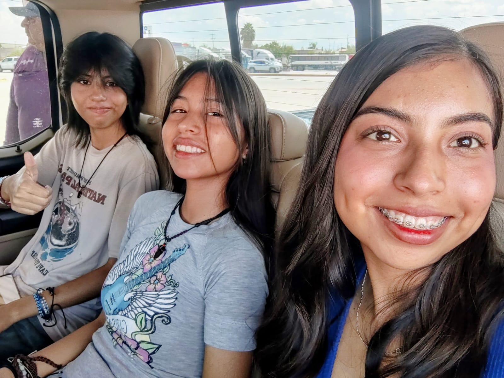
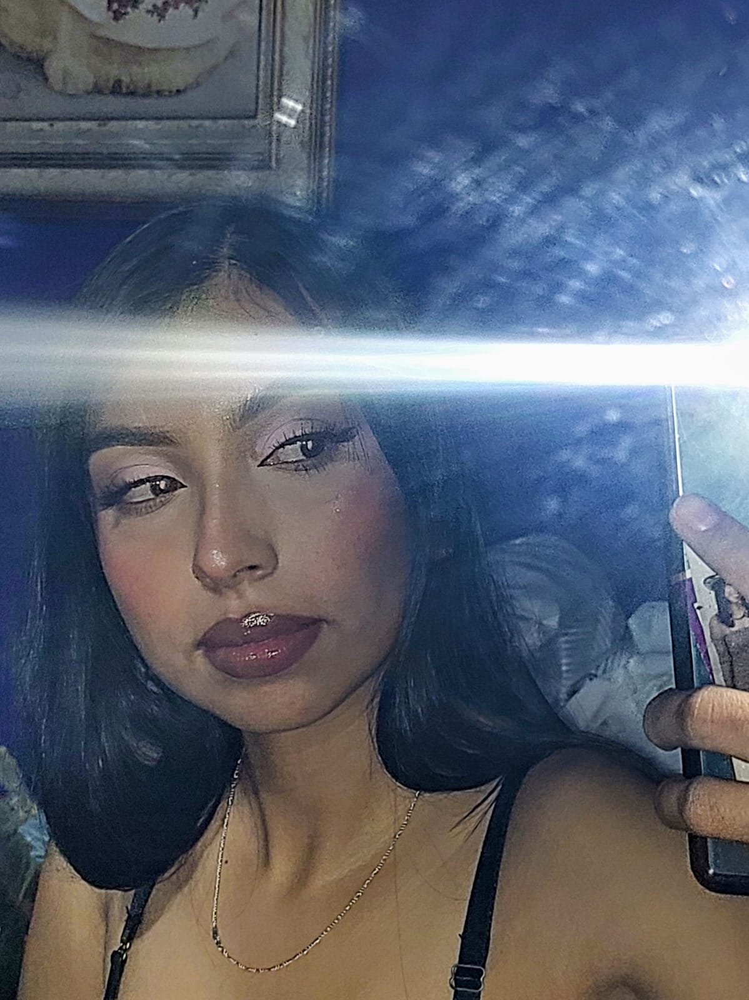
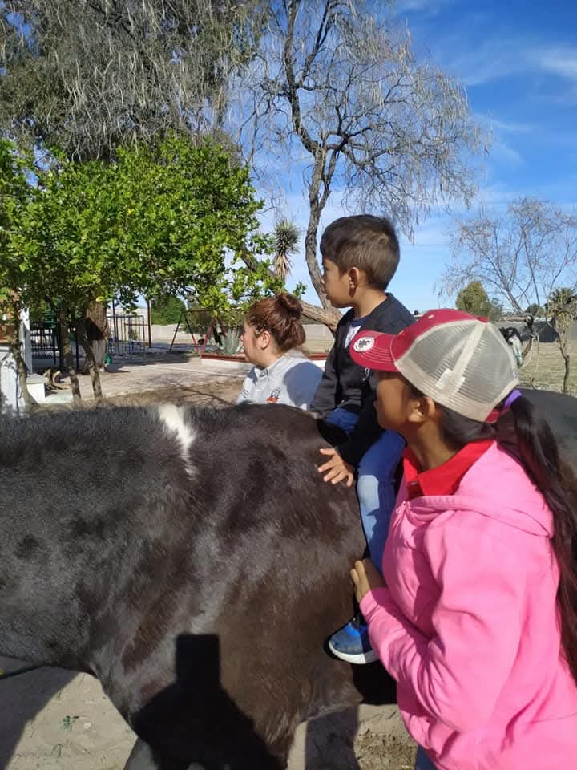

Conoce más sobre mí
Más allá de la tecnología: mis pasiones, mi familia y mi vocación
Mi Motor: Mi Familia
Soy orgullosamente la mayor de tres hijas. Compartir la vida con mis hermanas me ha enseñado desde muy joven el valor del liderazgo, la responsabilidad y el apoyo incondicional. Ellas y mis padres son mi pilar fundamental, el equipo con el que comparto cada logro y quienes me impulsan a seguir creciendo día con día tanto en lo profesional como en lo personal.

Música y Escenario
Cantar es una de mis más grandes pasiones y una forma maravillosa de conectar con las personas. Actualmente, formo parte de un dueto musical donde nos presentamos en eventos locales y karaokes. Lo que empezó como un pasatiempo se ha convertido en una actividad profesional donde compartimos talento, energía y buena música con el público.
Arte y Maquillaje
Para mí, el maquillaje es una forma de arte y expresión visual. Me fascina explorar diferentes técnicas, texturas y combinaciones de color para resaltar la seguridad de las personas o experimentar con diseños creativos. Es un espacio donde combino la precisión con la imaginación.

Expresión y Ritmo
Bailar es sinónimo de libertad y energía. Disfruto aprender nuevos ritmos y dejarme llevar por la música. Al igual que el canto, la danza me permite liberar el estrés, mantenerme en constante movimiento y desarrollar una gran disciplina de coordinación.
Vocación y Corazón: Lomos de Esperanza
Durante 5 años, tuve el gran honor de pertenecer a la asociación Lomos de Esperanza, desempeñándome como terapeuta y brindando sesiones de equinoterapia a niños con diferentes discapacidades. Esta maravillosa experiencia marcó mi vida por completo, enseñándome el verdadero significado de la paciencia, la empatía y la resiliencia a través de la increíble conexión entre los caballos y las infancias.
